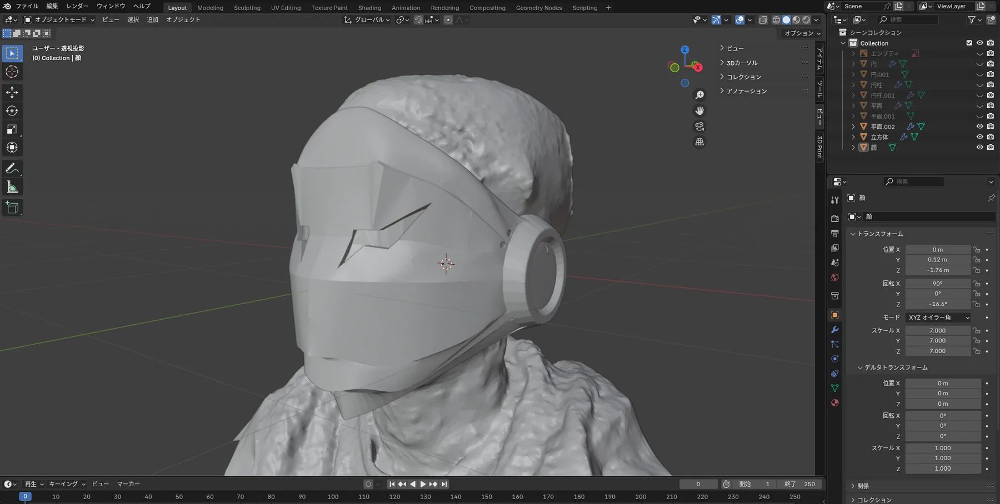
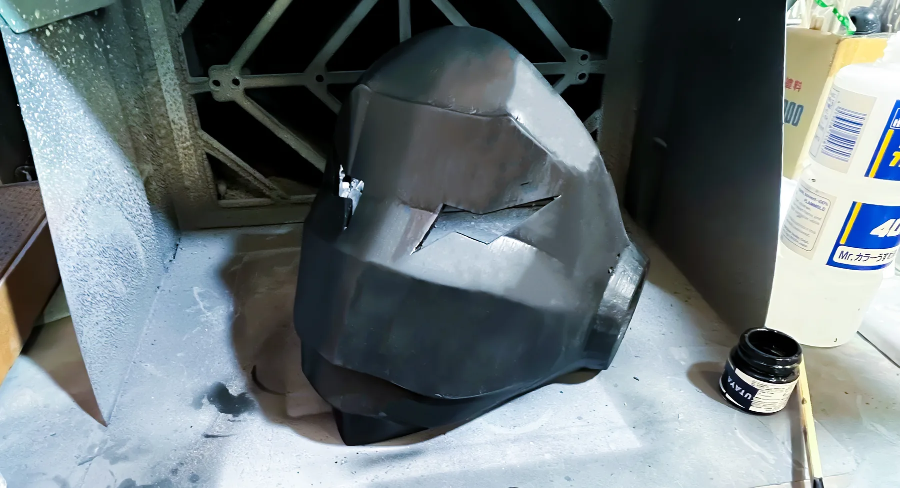

きっかけと完成形
サークルでのコスプレ制作に向けて、自分が着用するフルフェイスマスクをつくりました。見た目を整えるだけでなく、顔に当たらず着脱できる形にすることが目標でした。
データから実物へ
まず、自分の顔に合わせる
スマートフォンで顔をスキャンし、得られたメッシュをBlenderに読み込みました。顔とマスクの間に必要な余裕を確かめながら形を調整し、出力を前提にパーツを分けました。
出力してからも、形をつくる
FlashPrintで積層方向などを調整して出力。積層痕を研磨し、パテとサーフェーサーで表面を整えた後、エアブラシで色を重ねました。画面では見えなかった凹凸を、手で確認しながら仕上げています。
制作で残ったこと
Blenderで形を決めても、素材の厚みや出力面の粗さで印象は変わります。デジタルでの設計と、実物に触れてからの調整を往復する面白さを知った制作です。
制作の記録

